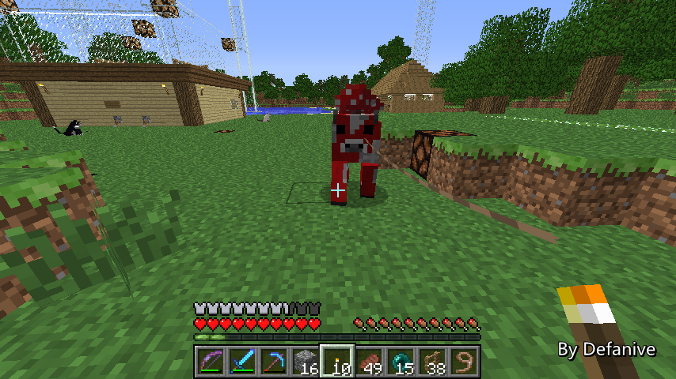
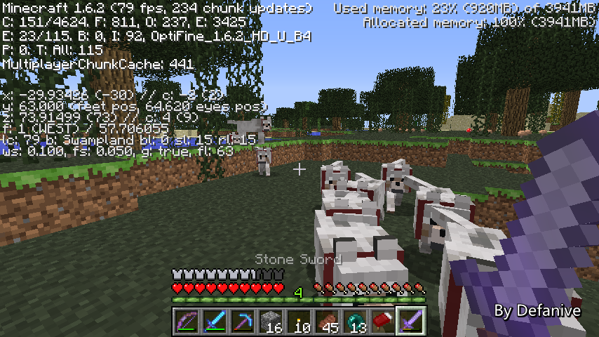

首页
上一页
261
262
263
264
265
266
266
267
268
269
270
271
下一页
末页
defanive2
无尽黑夜
14
刷动物有2种途径
第一种就是在chunk被生成的时候
一个chunk被生成的时候，大约有1/10的几率会生成动物
这个chunk中生成的动物会是同一类型
而且这个生成动物是与地图种子有关的
也就是说，同样的种子生成的同一个坐标处的chunk
总是会生成同样的动物
PS 这种刷动物是无视刷怪上限的
动物的刷怪上限为11，非常低
但是你在探索新地图的时候总是会有动物
不会受到刷怪上限的影响
——来自 MCLive
21305楼
2013-08-20 12:38
defanive2
无尽黑夜
14
自然，第一种途径只会在新生成的chunk中刷动物
当然不是我们想要，无法自动化
第二种途径就是类似刷怪一样
动物也会参照刷怪机制一样刷出
基本要求比刷怪稍微苛刻一点
只能在草方块上刷，亮度要大于9，要在正确的biome
PS 正确的biome就用自己的常识判断吧
ocean和desert不会刷动物
taiga和forest除了普通动物还会刷狼
plain中会刷马，mushroomisland中只会刷蘑菇牛
注意，第二种刷怪途径中，必须是在草方块上刷出
也就是说，蘑菇岛上也只有草方块上才会通过第二种途径刷蘑菇牛
——来自 MCLive
21308楼
2013-08-20 12:45
defanive2
无尽黑夜
14
但是为什么大家平时没有看到自己身边刷过动物呢
有三个原因，第一个就是因为刷怪上限
动物的刷怪常数在代码中被定为10
如此计算的话，刷怪上限就是10*17*17/256=11
对比普通怪物的79来说实在是太低了
而玩家周围经常会有chunk生成时刷出的动物
所以经常动物的上限都被超过了
自然也无法刷出
——来自 MCLive
21311楼
2013-08-20 12:53
defanive2
无尽黑夜
14
而第二个原因则是由于动物不会despawn
由于怪物会despawn，即使到了刷怪上限
离得远的怪物就会despawn，给刷怪上限腾出空间
但是由于动物不会despawn，一旦到达了刷怪上限
除非动物死亡，否则都不会再进行下一轮刷动物
尤其值得注意的是，spawn chunks里面的动物也被算到刷怪上限中
而spawn chunks中自然动物会有一大堆（至少大部分世界都是）
所以更加导致了平时根本没有见过动物被刷出的情况
——来自 MCLive
21312楼
2013-08-20 12:56
defanive2
无尽黑夜
14
而最后一个原因则要跑到源码里面看了
这一行的findchunksforspawning就是进行刷怪的外层代码了
注意到最后一个参数是决定是否进行刷动物的
而这个参数只有在world total time是400的倍数时才会为true
这个world total time是这个世界总计运行的game ticks数量
也就是说，刷动物严格地每400个game tick才进行一次
400个game tick则是20秒的时间
所以说即使前两个原因都被解决了
刷动物也是每20秒才会进行一次
PS 对比之下，刷怪和刷章鱼则是每秒进行20次
——来自 MCLive
21313楼
2013-08-20 13:02
defanive2
无尽黑夜
14
分析完为什么不刷动物的3个原因
那么我们就要来一个一个解决了
首先要处理的是spawn chunks周围的动物
spawn chunks里面的动物不被清理掉的话
无论走到哪里都会积累在上限里面
但是spawn chunks周围多少内的动物会被计算在上限中呢
——来自 MCLive
21318楼
2013-08-20 13:12
defanive2
无尽黑夜
14
我们知道spawn point周围17x17是inactive加载
自然大家就认为是把17x17的动物都杀掉就可以了
但是实际上并不是这样
写了一个mod在其他世界进行了测试之后
发现实际上是23x23范围内的动物都会算入上限中
PS 任何地方都找不到这个数据的资料
结果是23x23，实在让人惊讶
——来自 MCLive
21320楼
2013-08-20 13:18
defanive2
无尽黑夜
14
spawn point的chunk坐标是(-9,14)
那么要处理的范围就是(-21,2)到(3,26)
很不幸的是，这个农场在范围中
里面所有的羊和牛估计都得转移了
——来自 MCLive
21326楼
2013-08-20 13:22
defanive2
无尽黑夜
14
既然要带领动物移位，就顺便尝试一下1.6的新东西吧
绳子
PS 史莱姆球的第二个用处。。。
——来自 MCLive
21329楼
2013-08-20 13:24
defanive2
无尽黑夜
14
相信大家都已经把玩过绳子很久了
带领动物当然是最赞的一个用途了
——来自 MCLive
21330楼
2013-08-20 13:28
defanive2
无尽黑夜
14
先让羊群们临时栖息在这个地方
这里是(-22,21)，在覆盖范围之外
等到以后再把整个农场给迁移过去
——来自 MCLive
21331楼
2013-08-20 13:30
defanive2
无尽黑夜
14
现在仍然在转移羊群中
可能会花不少时间
——来自 MCLive
21336楼
2013-08-20 13:36
defanive2
无尽黑夜
14
应该是有16种颜色的羊
实际上最后发现居然有19只
应该有几个颜色重复了 = =
——来自 MCLive
21343楼
2013-08-20 13:49
defanive2
无尽黑夜
14
当然蘑菇牛也要引出来
这几只花了我好长时间才带回家的
——来自 MCLive

21344楼
2013-08-20 13:50
defanive2
无尽黑夜
14
全部动物都带走了
接下来可以开始清理spawn chunks中全部动物的行动了
——来自 MCLive
21345楼
2013-08-20 13:52
defanive2
无尽黑夜
14
杀动物自然少不了looting的剑了
上次附魔的时候突发奇想附魔一把石剑看看
结果就出了一个很不错的附魔
正好可以拿来杀动物
——来自 MCLive
21347楼
2013-08-20 13:54
defanive2
无尽黑夜
14
当然，以防耐久用完，再带上一把lootingIII的铁剑
——来自 MCLive
21348楼
2013-08-20 13:54
defanive2
无尽黑夜
14
有了怪物塔之后食物来源就不缺了
先从这些牛开始下手吧！
牛排！
——来自 MCLive
21349楼
2013-08-20 13:55
defanive2
无尽黑夜
14
牛排！
——来自 MCLive
21350楼
2013-08-20 13:56
defanive2
无尽黑夜
14
清空了的农场空空如也
这个农场应该是我直播贴里面的第一个工程了
不过搬迁近在咫尺
——来自 MCLive
21351楼
2013-08-20 13:57
defanive2
无尽黑夜
14
不过在出发之前，我们考虑一下，23x23的范围内动物都会被杀死
也就是说中间会有一些区域的动物数量为0
那么就会开始刷动物，导致前功尽弃
那么该怎么办呢，自然就得随身带着点动物了
狼/狗也被算在动物中，因此随身带上11只狗是很不错的选择
PS 自然，以后狗窝也得搬迁了
——来自 MCLive
21352楼
2013-08-20 13:59
defanive2
无尽黑夜
14
狗窝是很久以前的东西了
一键招呼功能一直都没有用过，直到现在 = =
不过不管怎么说，总算是派上用场了
——来自 MCLive
21354楼
2013-08-20 14:03
defanive2
无尽黑夜
14
喂了腐肉，清点了一下，正好11只狗
准备出发吧！
从(-21,2)到(3,26)
把全部动物都杀光！
——来自 MCLive
21357楼
2013-08-20 14:06
defanive2
无尽黑夜
14
这里就是我们的起点了！
开始清理动物！
——来自 MCLive
21361楼
2013-08-20 14:13
defanive2
无尽黑夜
14
我的路线是在z=3的地方，x从3走到-21
然后清理这周围的动物
下一次就在z=5的地方，x从-21走到3
然后就这样一直下去
很快就可以把全部的动物清理完了
预计耗时在1个小时左右
——来自 MCLive
21363楼
2013-08-20 14:15
defanive2
无尽黑夜
14
清理完z=3这条路线了，现在走z=5
收获不少
——来自 MCLive
21364楼
2013-08-20 14:20
defanive2
无尽黑夜
14
带领这么多狗现在有什么感想呢
其实最大感想就是噪音很大
在录周年庆视频的时候把狗的所有叫声文件都删掉了
突然觉得世界很清静！
——来自 MCLive

21366楼
2013-08-20 14:22
defanive2
无尽黑夜
14
z=9的路线了，继续推进
——来自 MCLive
21368楼
2013-08-20 14:28
defanive2
无尽黑夜
14
开始z=13，剑的耐久快跪了
——来自 MCLive
21371楼
2013-08-20 14:36
defanive2
无尽黑夜
14
顺便来说说1.7吧，最近开始听说1.7的事情了
不过第一个预览版似乎还没出来
估计mojang会让162停留很长一段时间
而1.7会修复光照系统中的这种阴影BUG
——来自 MCLive
21377楼
2013-08-20 14:48
首页
上一页
261
262
263
264
265
266
266
267
268
269
270
271
下一页
末页